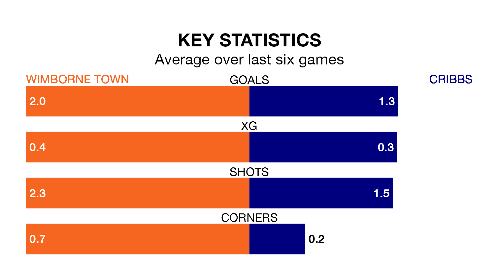

Two of the Southern League Division One South's top sides face each other at Cuthbury in Saturday's kick-off, when table-topping Wimborne Town host third-placed Cribbs.
Wimborne have picked up 15 wins and five draws from 24 games so far this season, and sit one point above the visitors going into the 3pm match.
Cribbs, meanwhile, have won 14 and drawn seven of 25, picking up 49 points.
With 50 goals in 24 games so far this season, Wimborne are the league's second-highest scorers with 2.1 goals per game. And they are conceding fewer than average, letting in 26 goals at a rate of 1.1 per game.
Cribbs, meanwhile, are average scorers, with 1.6 goals per game. They have conceded 1.1 goals per game.
Town are in good form in the Southern League Division One South, with four wins and a draw from their last six games.
With three wins and two draws over that period, the visitors' form is slightly worse – they have taken 11 points from 18, compared to the home side's 13.
Wimborne's last match was on February 17, a 2-0 win against Yate Town.
Cribbs drew 1-1 with Willand Rovers last time out, on Tuesday.
Updated: 10:08 (UTC), 23/02/24